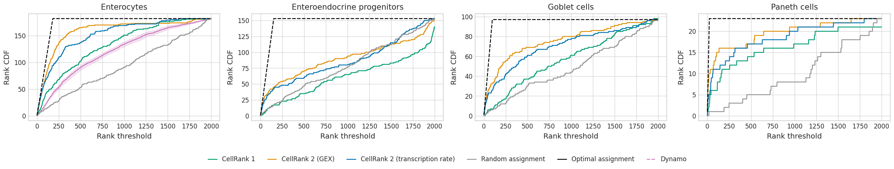
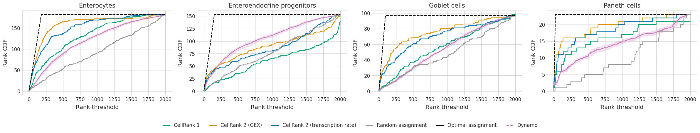

Method comparsion#
Library imports#
import os
import sys
from itertools import chain, product
from typing import Dict, Optional
import numpy as np
import pandas as pd
from sklearn.metrics import auc
import matplotlib.pyplot as plt
import mplscience
import seaborn as sns
sys.path.extend(["../../", "."])
from paths import DATA_DIR, FIG_DIR # isort: skip # noqa: E402
General settings#
SAVE_FIGURES = False
if SAVE_FIGURES:
os.makedirs(FIG_DIR / "labeling_kernel", exist_ok=True)
Constants#
TERMINAL_STATES = ["Enterocytes", "Enteroendocrine progenitors", "Goblet cells", "Paneth cells"]
Function definition#
def get_optimal_auc(n_vars):
"""Compute AUC if given all genes are ranked first."""
return n_vars * (n_vars + 1) / 2 + (2000 - n_vars) * n_vars
def plot_method_comparison(gene_ranks, method_pairs, terminal_state, criteria):
"""Plot performance of each method w.r.t. gene ranking."""
n_cols = len(method_pairs)
with mplscience.style_context():
sns.set_style(style="whitegrid")
fig, ax = plt.subplots(figsize=(6 * n_cols, 6), ncols=n_cols)
for ax_id, methods in enumerate(method_pairs):
method_a, method_b = methods
_df = gene_ranks[terminal_state]
ranks_a = _df.loc[_df["Algorithm"] == method_a].set_index("NAME")
ranks_b = _df.loc[_df["Algorithm"] == method_b].set_index("NAME")
ranks_a, ranks_b = ranks_a.align(ranks_b)
df = pd.DataFrame(
{
f"{method_a}": ranks_a[criteria],
f"{method_b}": ranks_b[criteria],
}
)
a_better_b = (ranks_a[criteria] < ranks_b[criteria]).sum() / ranks_a[criteria].size * 100
sns.scatterplot(data=df, x=method_a, y=method_b, ax=ax[ax_id])
lims = [
np.min([ax[ax_id].get_xlim(), ax[ax_id].get_ylim()]), # min of both axes
np.max([ax[ax_id].get_xlim(), ax[ax_id].get_ylim()]), # max of both axes
]
# now plot both limits against eachother
ax[ax_id].plot(lims, lims, "k-", alpha=0.75, zorder=0)
ax[ax_id].set_aspect("equal")
ax[ax_id].set_xlim(lims)
ax[ax_id].set_ylim(lims)
ax[ax_id].set_title(f'"{method_a}" < "{method_b}": {a_better_b:.2f}%')
plt.tight_layout()
plt.show()
def get_gene_ranks():
"""Loads gene ranking of each method."""
gene_ranks = {}
for terminal_state in TERMINAL_STATES:
# If Dynamo is included: [[f"Corr. rank - {terminal_state}", "Algorithm", "Run"]].fillna(0)
gene_ranks[terminal_state] = (
pd.concat(
[
pd.read_csv(DATA_DIR / "sceu_organoid" / "results" / f"gene_ranks_{terminal_state}-cr2.csv"),
pd.read_csv(DATA_DIR / "sceu_organoid" / "results" / f"gene_ranks_gex_{terminal_state}-cr2.csv"),
pd.read_csv(DATA_DIR / "sceu_organoid" / "results" / f"gene_ranks_{terminal_state}-em_model.csv"),
]
)
.rename(columns={"Unnamed: 0": "Gene"})
.drop_duplicates(subset=["Gene", "Algorithm"])[["Gene", f"Corr. rank - {terminal_state}", "Algorithm"]]
)
# gene_ranks[terminal_state].replace({"EM Model": "scVelo"}, inplace=True)
gene_ranks[terminal_state].replace(
{"CR2": "CellRank 2 (transcription rate)", "CR2 - GEX": "CellRank 2 (GEX)", "EM Model": "CellRank 1"},
inplace=True,
)
# Random rank assignment
np.random.seed(0)
var_names = (
gene_ranks[terminal_state]
.loc[gene_ranks[terminal_state]["Algorithm"] == "CellRank 2 (transcription rate)", "Gene"]
.unique()
)
random_ranking = pd.DataFrame(
{
"Gene": var_names,
f"Corr. rank - {terminal_state}": np.random.choice(np.arange(2000), size=len(var_names), replace=False),
"Algorithm": "Random assignment",
}
)
# Optimal gene ranking
optimal_ranking = pd.DataFrame(
{
"Gene": var_names,
f"Corr. rank - {terminal_state}": np.arange(len(var_names)),
"Algorithm": "Optimal assignment",
}
)
gene_ranks[terminal_state] = pd.concat([gene_ranks[terminal_state], random_ranking, optimal_ranking])
return gene_ranks
def get_rank_threshold(gene_ranks, n_methods):
"""Computes number of genes ranked below a given threshold for each method."""
rank_threshold = np.arange(0, 2000)
dfs = {}
for terminal_state in TERMINAL_STATES:
col_name = f"Corr. rank - {terminal_state}"
if "Run" in gene_ranks[terminal_state].columns:
dfs[terminal_state] = pd.DataFrame(
gene_ranks[terminal_state]
.groupby(["Algorithm", "Run"])
.apply(lambda x: (x[col_name].values <= rank_threshold.reshape(-1, 1)).sum(axis=1)) # noqa: B023
.to_dict()
)
dfs[terminal_state] = pd.melt(dfs[terminal_state]).rename(
{"variable_0": "Algorithm", "variable_1": "Run", "value": "Rank CDF"}, axis=1
)
dfs[terminal_state]["Rank threshold"] = np.concatenate([rank_threshold] * n_methods[terminal_state])
else:
dfs[terminal_state] = pd.DataFrame(
gene_ranks[terminal_state]
.groupby(["Algorithm"])
.apply(lambda x: (x[col_name].values <= rank_threshold.reshape(-1, 1)).sum(axis=1)) # noqa: B023
.to_dict()
)
dfs[terminal_state] = pd.melt(dfs[terminal_state]).rename(
{"variable": "Algorithm", "value": "Rank CDF"}, axis=1
)
dfs[terminal_state]["Rank threshold"] = np.concatenate([rank_threshold] * n_methods[terminal_state])
return dfs
def plot_gene_ranking(rank_threshold, methods, fname: str = "", palette: Optional[Dict[str, str]] = None):
"""Plots number of ranked genes below a specified threshold."""
_n_methods = list(map(len, methods.values()))
_argmax_n_methods = np.argmax(_n_methods)
_methods = list(methods.values())[_argmax_n_methods]
_n_methods = _n_methods[_argmax_n_methods]
if palette is None:
palette = dict(zip(_methods, sns.color_palette("colorblind").as_hex()[:_n_methods]))
palette["Optimal assignment"] = "#000000"
with mplscience.style_context():
sns.set_style(style="whitegrid")
fig, ax = plt.subplots(figsize=(6 * len(TERMINAL_STATES), 4), ncols=len(TERMINAL_STATES))
for ax_id, terminal_state in enumerate(TERMINAL_STATES):
_df = rank_threshold[terminal_state]
_df["line_style"] = "-"
_df.loc[_df["Algorithm"] == "Optimal assignment", "line_style"] = "--"
sns.lineplot(
data=_df,
x="Rank threshold",
y="Rank CDF",
hue="Algorithm",
style=_df["line_style"].tolist(),
palette=palette,
ax=ax[ax_id],
)
ax[ax_id].set_title(terminal_state)
if ax_id == 0:
handles, labels = ax[ax_id].get_legend_handles_labels()
handles[3].set_linestyle("--")
ax[ax_id].get_legend().remove()
handles = [handles[0], handles[1], handles[2], handles[5], handles[4], handles[3]]
labels = [labels[0], labels[1], labels[2], labels[5], labels[4], labels[3]]
fig.legend(handles=handles[:6], labels=labels[:6], loc="lower center", ncol=6, bbox_to_anchor=(0.5, -0.15))
plt.tight_layout()
plt.show()
if SAVE_FIGURES:
for terminal_state in TERMINAL_STATES:
sns.set_style(style="whitegrid")
fig, ax = plt.subplots(figsize=(5, 4))
_df = rank_threshold[terminal_state]
_df["line_style"] = "-"
_df.loc[_df["Algorithm"] == "Optimal assignment", "line_style"] = "--"
sns.lineplot(
data=_df,
x="Rank threshold",
y="Rank CDF",
hue="Algorithm",
style=_df["line_style"].tolist(),
palette=palette,
ax=ax,
)
ax.set(xlabel=None, xticklabels=[], yticklabels=[], ylabel=None, title="")
ax.get_legend().remove()
fig.savefig(
FIG_DIR / "labeling_kernel" / f"{fname}_{terminal_state}.pdf",
format="pdf",
transparent=True,
bbox_inches="tight",
)
plt.show()
def get_aucs(gene_ranking_dfs, optimal_aucs, methods):
"""Computes area under the ranking threshold curve."""
all_methods = list(set(chain(*methods.values())))
# Absolute AUC
auc_df = pd.DataFrame(index=all_methods, columns=TERMINAL_STATES, dtype=float)
# Given AUC w.r.t. optimal AUC
auc_rel_df = pd.DataFrame(index=all_methods, columns=TERMINAL_STATES, dtype=float)
rank_threshold = np.arange(0, 2000)
aucs_ = {terminal_state: {} for terminal_state in TERMINAL_STATES}
for method, terminal_state in product(all_methods, TERMINAL_STATES):
_df = gene_ranking_dfs[terminal_state]
if (method == "Dynamo") and _df["Algorithm"].isin([method]).any():
aucs_[terminal_state][method] = [
auc(x=rank_threshold, y=_df.loc[(_df["Algorithm"] == method) & (_df["Run"] == run), "Rank CDF"].values)
for run in _df["Run"].unique()
]
auc_df.loc[method, terminal_state] = np.mean(aucs_[terminal_state][method])
auc_rel_df.loc[method, terminal_state] = (
auc_df.loc[method, terminal_state] / optimal_aucs[terminal_state].loc[method]
)
elif method == "Dynamo":
pass
else:
aucs_[terminal_state][method] = auc(
x=rank_threshold, y=_df.loc[_df["Algorithm"] == method, "Rank CDF"].values
)
auc_df.loc[method, terminal_state] = aucs_[terminal_state][method]
auc_rel_df.loc[method, terminal_state] = (
auc_df.loc[method, terminal_state] / optimal_aucs[terminal_state].loc[method]
)
return auc_df, auc_rel_df
Data loading#
gene_ranks = get_gene_ranks()
for terminal_state in TERMINAL_STATES:
if (
DATA_DIR
/ "sceu_organoid"
/ "results"
/ f"gene_ranks_{terminal_state}-chase_and_pulse-dynamo_terminal_states-dynamo.csv"
).is_file():
gene_ranks[terminal_state] = pd.concat(
[
gene_ranks[terminal_state],
pd.read_csv(
DATA_DIR
/ "sceu_organoid"
/ "results"
/ f"gene_ranks_{terminal_state}-chase_and_pulse-dynamo_terminal_states-dynamo.csv"
)
.rename(columns={"Unnamed: 0": "Gene"})
.drop_duplicates(subset=["Gene", "Algorithm", "Run"]),
]
).fillna(0)
gene_ranks[terminal_state]["Run"] = gene_ranks[terminal_state]["Run"].astype(int)
methods = {}
n_methods = {}
for terminal_state in TERMINAL_STATES:
methods[terminal_state] = gene_ranks[terminal_state]["Algorithm"].unique().tolist()
if "Run" in gene_ranks[terminal_state].columns:
n_methods[terminal_state] = gene_ranks[terminal_state][["Algorithm", "Run"]].drop_duplicates().shape[0]
else:
n_methods[terminal_state] = len(methods[terminal_state])
Comparison#
dfs = get_rank_threshold(gene_ranks=gene_ranks, n_methods=n_methods)
palette = {
"CellRank 2 (transcription rate)": "#0173b2",
"CellRank 2 (GEX)": "#de8f05",
"CellRank 1": "#029e73",
"Dynamo": "#cc78bc",
"Random assignment": "#949494",
"Optimal assignment": "#000000",
}
plot_gene_ranking(rank_threshold=dfs, methods=methods, fname="rank_analysis", palette=palette)

optimal_aucs = {}
for terminal_state in TERMINAL_STATES:
if "Run" in gene_ranks[terminal_state].columns:
optimal_aucs[terminal_state] = gene_ranks[terminal_state].groupby(["Algorithm"]).size() / gene_ranks[
terminal_state
].groupby(["Algorithm"]).apply(lambda x: len(x["Run"].unique()))
else:
optimal_aucs[terminal_state] = gene_ranks[terminal_state].groupby("Algorithm").size()
optimal_aucs[terminal_state] = get_optimal_auc(optimal_aucs[terminal_state])
_, auc_rel_df = get_aucs(gene_ranking_dfs=dfs, optimal_aucs=optimal_aucs, methods=methods)
auc_rel_df
| Enterocytes | Enteroendocrine progenitors | Goblet cells | Paneth cells | |
|---|---|---|---|---|
| Optimal assignment | 0.999737 | 0.999738 | 0.999741 | 0.999738 |
| CellRank 2 (GEX) | 0.915893 | 0.610649 | 0.801061 | 0.860166 |
| Random assignment | 0.535365 | 0.538473 | 0.513745 | 0.435755 |
| CellRank 2 (transcription rate) | 0.878167 | 0.590511 | 0.744919 | 0.813857 |
| CellRank 1 | 0.769516 | 0.453206 | 0.599141 | 0.785032 |
| Dynamo | 0.700409 | NaN | NaN | NaN |
Dynamo with CR terminal states#
gene_ranks = get_gene_ranks()
for terminal_state in TERMINAL_STATES:
if (
DATA_DIR
/ "sceu_organoid"
/ "results"
/ f"gene_ranks_{terminal_state}-chase_and_pulse-cr_terminal_states-dynamo.csv"
).is_file():
gene_ranks[terminal_state] = pd.concat(
[
gene_ranks[terminal_state],
pd.read_csv(
DATA_DIR
/ "sceu_organoid"
/ "results"
/ f"gene_ranks_{terminal_state}-chase_and_pulse-cr_terminal_states-dynamo.csv"
)
.rename(columns={"Unnamed: 0": "Gene"})
.drop_duplicates(subset=["Gene", "Algorithm", "Run"]),
]
).fillna(0)
gene_ranks[terminal_state]["Run"] = gene_ranks[terminal_state]["Run"].astype(int)
methods = {}
n_methods = {}
for terminal_state in TERMINAL_STATES:
methods[terminal_state] = gene_ranks[terminal_state]["Algorithm"].unique().tolist()
if "Run" in gene_ranks[terminal_state].columns:
n_methods[terminal_state] = gene_ranks[terminal_state][["Algorithm", "Run"]].drop_duplicates().shape[0]
else:
n_methods[terminal_state] = len(methods[terminal_state])
dfs = get_rank_threshold(gene_ranks=gene_ranks, n_methods=n_methods)
palette = {
"CellRank 2 (transcription rate)": "#0173b2",
"CellRank 2 (GEX)": "#de8f05",
"CellRank 1": "#029e73",
"Dynamo": "#cc78bc",
"Random assignment": "#949494",
"Optimal assignment": "#000000",
}
plot_gene_ranking(rank_threshold=dfs, methods=methods, fname="rank_analysis_w_cr_terminal_states", palette=palette)

optimal_aucs = {}
for terminal_state in TERMINAL_STATES:
if "Run" in gene_ranks[terminal_state].columns:
optimal_aucs[terminal_state] = gene_ranks[terminal_state].groupby(["Algorithm"]).size() / gene_ranks[
terminal_state
].groupby(["Algorithm"]).apply(lambda x: len(x["Run"].unique()))
else:
optimal_aucs[terminal_state] = gene_ranks[terminal_state].groupby("Algorithm").size()
optimal_aucs[terminal_state] = get_optimal_auc(optimal_aucs[terminal_state])
_, auc_rel_df = get_aucs(gene_ranking_dfs=dfs, optimal_aucs=optimal_aucs, methods=methods)
auc_rel_df
| Enterocytes | Enteroendocrine progenitors | Goblet cells | Paneth cells | |
|---|---|---|---|---|
| Optimal assignment | 0.999737 | 0.999738 | 0.999741 | 0.999738 |
| CellRank 2 (GEX) | 0.915893 | 0.610649 | 0.801061 | 0.860166 |
| Random assignment | 0.535365 | 0.538473 | 0.513745 | 0.435755 |
| CellRank 2 (transcription rate) | 0.878167 | 0.590511 | 0.744919 | 0.813857 |
| CellRank 1 | 0.769516 | 0.453206 | 0.599141 | 0.785032 |
| Dynamo | 0.700308 | 0.720271 | 0.578212 | 0.624054 |